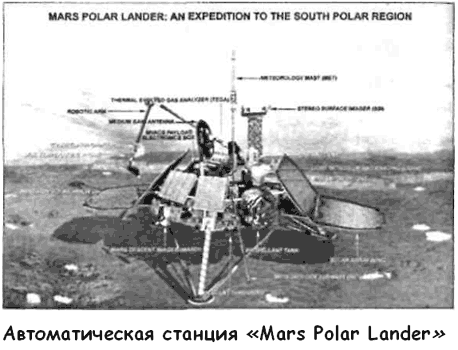
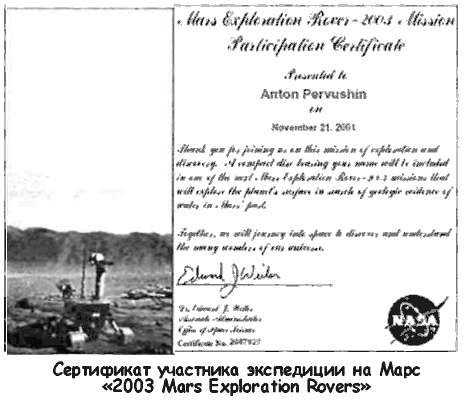
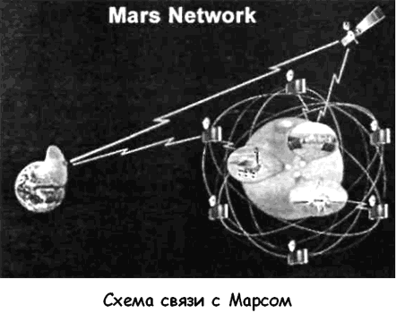

Марсианский Интернет
В конце XIX века, когда вера общества в существование марсианской цивилизации достигла апогея, была высказана мысль о том, что за неимением средств для межпланетных перелетов неплохо бы установить с марсианами прямую и двустороннюю связь.
Первое, что пришло в голову энтузиастам идеи межпланетной связи, — это изобразить на поверхности Земли геометрические фигуры. Пусть такие фигуры возвестят всей вселенной, что и на нашей планете владычествует разум. Людям XIX века, взбудораженным открытиями Скиапарелли и Довела, этот наивный прожект представлялся в высшей степени привлекательным. К тому же автором его был не кто иной, как Карл Фридрих Гаус, великий математик и астроном.
Гаус без тени иронии предлагал изобразить на просторах Сибири грандиозный чертеж, подтверждающий правоту теоремы Пифагора. Гаус искренне верил, что достаточно сообщить вселенной о равенстве суммы квадратов катетов квадрату гипотенузы, чтобы разумные существа на соседних планетах без промедления откликнулись на этот сигнал.
Аналогичную мысль развивал и венский ученый Литров.
Он предлагал сделать площадкой для сигнализации Сахару и рекомендовал изображать гигантские чертежи траншеями, наполненными водой. На эту воду нужно было налить керосин и поджечь его с таким расчетом, чтобы сигнал горел шесть часов.
Но даже огненный фейерверк Литрова померк рядом с тем, что отстаивал французский изобретатель Шарль Кро.
Его книга «Средства связи с планетами», опубликованная в 1890 году, читалась как увлекательнейший роман. Воображению француза представлялись гигантские зеркала, фокусирующие солнечные лучи. Огненные «зайчики» этих зеркал, оплавляя своим жаром почву, должны были рисовать геометрически правильные фигуры, но не на Земле, а на поверхности тех планет, с которыми предстояло установить связь!
В конце концов случилось то, чего следовало ожидать с самого начала «марсианской истерии»: желаемое стало выдаваться за действительное. Коль скоро люди стремятся разглядеть Марс, то почему же не поверить, что марсианские астрономы не менее внимательно наблюдают за Землей? Так появилась заметка «Междупланетные сообщения», опубликованная анонимом 30 октября 1896 года на страницах газеты «Калужский вестник».
Основываясь на «сообщениях французской прессы», анонимный автор поведал калужанам о том, что два француза, Кальман и Верман, якобы разглядели на фотоснимках Марса геометрически правильные чертежи. Наделив несуществующих марсиан популярной на Земле мыслью о межпланетной связи, автор сообщения в «Калужском вестнике» заканчивал его так:
«Почему бы не предположить, что открытые ими (Кальманом и Верманом. — А. П.) на Марсе знаки есть не что иное, как ответ на прошлогоднюю попытку американских астрономов войти в сношения с жителями этой планеты посредством фигур из громадных костров, расположенных на большом пространстве? Во всяком случае, несомненно, что жители Марса оказывают желание сообщаться с нами; а какие это повлечет следствия, этого даже богатое воображение Жюля Верна и Фламмариона не может себе представить; это только будущее может нам показать».
Сообщение, перепечатанное из французской газеты, заинтересовало жителей Калуги. Естественно, что редакция постаралась удовлетворить этот интерес. Почти месяц спустя, 26 ноября 1896 года, «Калужский вестник» публикует «научный фельетон» основоположника ракетостроения Константина Эдуардовича Циолковского «Может ли когда-нибудь Земля заявить жителям других планет о существовании на ней разумных существ?».
К сообщению французской печати о том, что на поверхности Марса якобы замечены круг с двумя взаимно-перпендикулярными диаметрами, эллипс и парабола, Константин Эдуардович отнесся с известной осторожностью: «Не беремся утверждать достоверности этих поразительных открытий…» — но не удержался от того, чтобы не предложить свой собственный проект по установлению межпланетной связи.
Циолковский верил, что во вселенной есть, кроме нас, и другие разумные существа. Идеей обитаемости других планет он проникся еще в ту пору, когда совсем юношей занимался самообразованием в Москве. И вот теперь он увидел реальную возможность вступить с инопланетянами в контакт.
Циолковский предложил установить на весенней черной пахоте ряд щитов площадью в одну квадратную версту, окрашенных яркой белой краской.
«Маневрируя с нашими щитами, кажущимися с Марса одной блестящей точкой, мы сумели бы прекрасно заявить о себе и о своей культуре».
Каким образом? А очень просто. Для начала понадобится ряд одинаковых сигналов. Их необходимо посылать через равные промежутки времени. Они прозвучат как позывные — свидетельство того, что Земля преднамеренно вызывает на разговор всю вселенную, а дальше…
«Другой маневр: щиты убеждают марситов в нашем уменье считать. Для этого щиты заставляют сверкнуть раз, потом 2, 3 и т. д., оставляя между каждой группой сверканий промежуток в секунд 10.
Подобным путем мы могли бы щегольнуть перед нашими соседями полными арифметическими познаниями: показать, например, наше умение умножать, делить, извлекать корни и проч. Знание разных кривых могли бы изобразить рядом чисел.
Так параболу рядом 1, 4, 9, 16, 25… Могли бы даже показать астрономические познания, например, соотношения объемов планет… Следует начать с вещей, известных марситам, каковы астрономические и физические данные.
Ряд чисел мог бы даже передать марситам любую фигуру: фигуру собаки, человека, машины и проч.
В самом деле, если они, подобно людям, знакомы хотя бы немного с аналитической геометрией, то им нетрудно будет догадаться понимать эти числа…»
Как и многие другие идеи Константина Циолковского, эта не получила практического применения, однако в ней, словно в зеркале, отразились умонастроения того времени и надежды, которые образованная часть общества связывала с Марсом и марсианами.
После фотоснимков, переданных «Маринером-9» и «Викингами», интерес общественности к Марсу заметно снизился.
Всем стало понятно, что встретить на красной планете братьев по разуму не получится — хорошо, если удастся найти хотя бы следы жизни. Однако старые «умершие» идеи имеют свойство оживать в новом качестве. Нечто подобное произошло и с идеей межпланетной связи.
Выше я уже упоминал, что 3 декабря 1998 года к Марсу стартовала автоматическая станция «Марс Полар Ландер»

Планировалось, что эта станция стоимостью 165 миллионов долларов совершит посадку в районе южной полярной шапки Марса в декабре 1999 года. Основной задачей станции было исследование климата и водных ресурсов Марса, а также состава его грунта.
Помимо телекамер и метеоприборов, на станции имелись ковш (который с гордостью называли «первым экскаватором в космосе») и печь для прогрева образцов грунта с целью выделения летучих веществ, в основном — углекислого газа и воды. Один из приборов был предоставлен Россией. Он носит название «лидар» и представляет собой лазерный локатор, способный посылать импульсы в зенит, а затем ловить рассеянный свет для изучения распределения в атмосфере тумана, пыли и облаков. К этому прибору был прикреплен миниатюрный микрофон, созданный по инициативе энтузиастов из американского «Планетного общества» и, в частности, его основателя — известного астрофизика Карла Сагана.
Предполагалось, что когда «Марс Полар Ландер» совершит благополучную посадку, то уже через час начнет передавать на Землю в режиме реального времени фотографии окружающего ландшафта и звуки Марса. Полюбоваться на картинки и послушать эти звуки можно было бы на сайте американского «Планетного общества», по адресу www.planetary.org. Фактически «Марс Полар Ландер» должен был стать первой веб-камерой, установленной на другой планете, а мы, пользователи Интернета, могли бы присутствовать при рождении совершенно новой ветви глобальной электронной сети.
Сам ход экспедиции подробно освещался на http:// mars.jpl.nasa.gov/msp98.
Признаться, я с нетерпением ждал того момента, когда «Марс Полар Ландер» начнет трансляцию звуков Марса, но не дождался. Посадка зонда закончилась катастрофой. Все попытки установить с ним связь провалились.
Впрочем, специалисты НАСА не оставляют надежды создать нечто вроде электронного почтового ящика на Марсе.
После гибели станции «Марс Полар Ландер», в мае 1999 года, НАСА пригласило всех желающих принять «виртуальное» участие в марсианской экспедиции 2003 года. На два «марсохода», которые высадятся на красную планету в январе 2004 года, будут помещены лазерные диски. Любой человек, имеющий доступ в Интернет, может зайти на страничку http://spacekids.hq.nasagov/2003/nameform.cfm и записать на эти диски свое гордое имя. Причем НАСА выдает электронный сертификат за индивидуальным номером, свидетельствующий о вашем участии в экспедиции «2003 Mars Exploration Rovers».


Впрочем, специалисты НАСА понимают, что создание марсианской веб-камеры или отправка на красную планету диска с именами землян — это полумеры; связь в таком случае получается односторонней. А между тем межпланетная космонавтика (особенно в случае подготовки длительного пилотируемого полета) нуждается в двусторонней связи.
И вот недавно поступило сообщение, что группе по разработке стандартов Интернета «Internet Engineering Task Force» было предложено создать межпланетный Интернет-протокол. Испытать этот протокол планируется в том же 2003 году с использованием орбитальной станции «Марс Экспресс».
Предложенный протокол DARPA InterPlaNetary Internet (IPN) предусматривает развернуть целую Интернет-сеть, чтобы облегчить в будущем связь между планетами, спутниками, астероидами, беспилотными и пилотируемыми космическими кораблями, а также сформировать стабильную межпланетную сеть. Для этого предусмотрено формирование по всей Солнечной системе инфраструктуры, состоящей из большого количества стандартизированных, повторно используемых коммуникаций.
Хотя этот проект пока еще кажется фантастикой, его руководителем является Уинтон Серф — вице-президент «МCI WorldCom» и разработчик стандарта TCP/IP, который, как известно, является основным стандартом Интернет-коммуникаций.